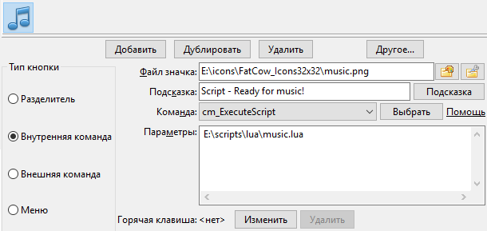
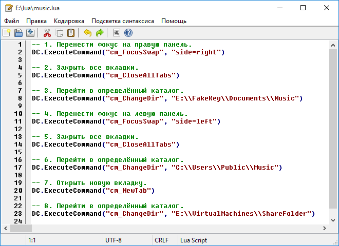

Подробную информацию о скриптовом языке программирования Lua можно найти на веб-сайте Lua.
Double Commander может выполнять скрипты Lua с помощью команды cm_ExecuteScript.
Параметры скриптов должны передаваться как есть, без экранирования (без кавычек или "\"), для этого необходимо использовать переменную %"0: например, %"0%p0 для файла под курсором вместо %p0 или %"0%D для текущего каталога вместо %D. В противном случае, если Double Commander автоматически добавит кавычки, они будут переданы как часть параметра и вам придётся их учитывать.
Для получения списка всех выделенных файлов мы можем использовать переменные (%LU, %FU или %RU) или внутренние команды (cm_SaveSelectionToFile, cm_SaveFileDetailsToFile, cm_CopyFullNamesToClip или cm_CopyFileDetailsToClip).
Мы можем использовать, например, %p: в этом случае Double Commander передаст имена всех выделенных файлов одной строкой, разделяя имена пробелом.
Также на языке Lua можно писать информационные плагины, примеры можно найти в папке программы (plugins/wdx/scripts). В Вики есть страница, посвящённая написанию плагинов. Ограничения: поддерживаются только следующие типы данных
Список выше содержит имена из заголовочных файлов, в скриптах Lua мы должны использовать цифровые значения, которые указаны в скобках.
О кодировке текста
Все дополнительные функции, описанные ниже, принимают строковые параметры в кодировке UTF-8 и возвращают строки в этой кодировке (за исключением функции LazUtf8.ConvertEncoding).
Часть функций из стандартных библиотек Lua заменены на функции из Double Commander или Free Pascal/Lazarus (или написаны новые), это обеспечивает поддержку UTF-8.
При написании плагинов мы также должны использовать UTF-8 для текстовых данных (ft_multiplechoice, ft_string и ft_fulltext).
При сохранении скриптов используйте кодировку UTF-8 без BOM.
Примечания
Автоматизация с помощью Lua имеет большие возможности, но могут быть нюансы, которые в некоторых случаях необходимо иметь в виду. Давайте попробуем собрать их в этом подразделе.
1. Если включено автообновление и опция Загружать список файлов в отдельном потоке, то функция обновления будет работать асинхронно. При этом скрипты выполняются в основном потоке Double Commander и поэтому в некоторых случаях всё это может отразиться на работе вашего скрипта. Например, иногда последовательное выполнение команд для навигации может не сработать (например, большие каталоги, медленный диск), в этом случае попробуйте отключить Загружать список файлов в отдельном потоке или поискать альтернативное решение.
Если ваш скрипт создаёт новые файлы в текущей панели или переименовывает существующие файлы, но после этого не завершается и выполняет некоторые дополнительные действия (например, выделение файов или перемещение курсора), то в некоторых случаях эти действия не будут иметь эффекта: ещё не все файлы могут быть в панели и вам потребуется предварительно вызвать команду cm_Refresh. При описываемых условиях cm_Refresh также будет выполняться асинхронно и Double Commander может не успеть полностью обновить список файлов после ваших изменений.
Автообновление и загрузка списка файлов в отдельном потоке – это удобные функции для файлового менеджера, поэтому экспериментально был найден стабильно работающий способ на время вернуть управление программе и позволить полностью завершить обновление списка файлов:
DC.ExecuteCommand("cm_Refresh") i = 10 while i > 0 do SysUtils.Sleep(10) DC.ExecuteCommand("") i = i - 1 end
2. Функция Lua io.open использует стандартную функцию C fopen: в текстовом режиме эта функция может преобразовывать тип окончания строк (CRLF, LF или CR) при чтении и записи, что может привести к неожиданному результату. Если вам попадаются файлы с разным типом окончания строк или вы пишете кроссплатформенный скрипт, это необходимо учитывать или может быть практичнее отдать предпочтение бинарному режиму.
3. Для диалога свойств файла в Linux и других Unix-подобных операционных системах функция ContentGetValue вызывается с флагом CONTENT_DELAYIFSLOW (четвёртый параметр, значение равно 1), это позволяет избежать задержки открытия окна: если получение данных медленное, мы можем эти данные исключить, просто добавляем проверку значения флага и возвращаем nil для таких полей или плагина.
4. Если плагин должен вернуть пустую строку, то более быстрым будет передать nil вместо "".
Чтобы использовать скрипты Lua, нам требуется интерпретатор Lua, Double Commander поддерживает версии 5.1 - 5.4.
По умолчанию DC ищет файл с именем lua5.1.dll (Windows), liblua5.1.so.0 (Unix или GNU/Linux) или liblua5.1.dylib (macOS) в своём каталоге и в системном. Мы можем изменить имя файла (и путь) в параметре Библиотека Lua.
Мы можем использовать DLL-файл проекта LuaJIT. LuaJIT сочетает в себе высокоскоростной интерпретатор, написанный на ассемблере, и JIT-компилятор. Также мы получаем библиотеку FFI: с её помощью в скриптах можно будет вызывать внешние функции C и использовать структуры данных C.
Дистрибутивы DC для Windows включают в себя DLL-файл Lua (в DC 0.9.7 и новее из проекта LuaJIT), в иных случаях мы можем найти и установить его с помощью менеджера пакетов или скомпилировать. Если используем 64-битную версию DC, то DLL-файл также должен быть 64-битным.
Double Commander предлагает несколько библиотек функций для скриптов Lua, список представлен ниже.
| Список библиотек | ||
|---|---|---|
| Библиотека | Имя функции | Краткое описание |
| DC | Специфические функции Double Commander | |
| SysUtils | Различные системные функции | |
| Clipbrd | Различные функции для работы с буфером обмена | |
| Dialogs | Взаимодействие с пользователем | |
| LazUtf8 | Строковые функции для работы с UTF-8 | |
| Char | Получение информации о символах | |
| os | Функции, связанные с операционной системой | |
Эта библиотека содержит специфические функции Double Commander, все функции представлены в таблице DC.
| Библиотека DC | |
|---|---|
| Функция | Описание |
|
DC.LogWrite(sMessage, iMsgType, bForce, bLogFile) Пишет сообщение в окно протокола:
|
|
|
iPanel = DC.CurrentPanel() Получить активную панель: возвращает 0, если активна левая панель, или 1, если правая. DC.CurrentPanel(iPanel) Сделать активной: левую панель, если iPanel равно 0, или правую, если равно 1. |
|
|
DC.ExecuteCommand(sCommand, Param1, Param2,...,ParamX) Вызывает внутреннюю команду Double Commander sCommand с параметрами Param1..ParamX. Мы можем подставить столько Param..., сколько поддерживает команда Command. |
|
Помимо внутренних команд, в скриптах мы можем использовать специальную команду cm_ExecuteToolBarItem, эта команда позволяет вызывать кнопки панелей инструментов по их идентификатору (в программе эта функция обеспечивает использование горячих клавиш для кнопок панелей инструментов). Команда используется аналогично обычным внутренним командам (смотрите примеры ниже) и имеет следующие параметры:
| Параметр | Значение | Описание |
|---|---|---|
| ToolBarID | TfrmOptionsToolbar | кнопка основной панели инструментов |
| TfrmOptionsToolbarMiddle | кнопка центральной панели инструментов | |
| (отсутствует) | кнопка основной панели инструментов | |
| ToolItemID | идентификатор | уникальный идентификатор кнопки |
Уникальный идентификатор хранится в теге ID и у нас есть несколько способов его получить: мы можем найти кнопку в файле doublecmd.xml, в файле резервной копии панели инструментов или просто скопировать кнопку в буфер обмена и вставить её код в текстовый редактор.
Примечание: Идентификаторы генерируются автоматически и не обязаны совпадать с индентификаторами аналогичных кнопок другой копии программы, но при необходимости мы можем вручную задать своё значение.
В этом примере мы написали простой скрипт, который сделает следующее:
-- 1. Перенести фокус на правую панель. DC.ExecuteCommand("cm_FocusSwap", "side=right") -- 2. Закрыть все вкладки. DC.ExecuteCommand("cm_CloseAllTabs") -- 3. Перейти в указанный каталог. DC.ExecuteCommand("cm_ChangeDir", "E:\\FakeKey\\Documents\\Music") -- 4. Перенести фокус на левую панель. DC.ExecuteCommand("cm_FocusSwap", "side=left") -- 5. Закрыть все вкладки. DC.ExecuteCommand("cm_CloseAllTabs") -- 6. Перейти в указанный каталог. DC.ExecuteCommand("cm_ChangeDir", "C:\\Users\\Public\\Music") -- 7. Открыть новую вкладку. DC.ExecuteCommand("cm_NewTab") -- 8. Перейти в указанный каталог. DC.ExecuteCommand("cm_ChangeDir", "E:\\VirtualMachines\\ShareFolder")
Для выполнения нашего скрипта мы можем создать кнопку на панели инструментов с внутренней командой cm_ExecuteScript.
Предположим, наш скрипт E:\scripts\lua\music.lua, мы можем настроить эту кнопку следующим образом:

Кроме того, для редактирования наших скриптов мы можем использовать встроенный редактор Double Commander. Если файл имеет расширение .lua, то он будет распознан редактором и открыт с подсветкой синтаксиса, специфичного для языка Lua:

Эта библиотека содержит различные системные функции, все они представлены в таблице SysUtils.
| Библиотека System | |||||||||||
|---|---|---|---|---|---|---|---|---|---|---|---|
| Функция | Описание | ||||||||||
|
SysUtils.Sleep(iMilliseconds) Приостанавливает выполнение скрипта на указанное количество миллисекунд (iMilliseconds), выполнение сценария будет продолжено после истечения указанного времени. |
|||||||||||
|
SysUtils.GetTickCount() Возвращает количество интервалов времени (тиков) с момента старта системы. Это полезно для измерения времени, но не следует делать каких-либо предположений относительно количества времени в интервале между тиками. |
|||||||||||
|
bExists = SysUtils.FileExists(sFileName) Проверяет, существует ли в файловой системе определённый файл.
|
|||||||||||
|
bExists = SysUtils.DirectoryExists(sDirectory) Проверяет существование sDirectory в файловой системе и что это действительно каталог. Если это так, то функция возвращает |
|||||||||||
|
iAttr = SysUtils.FileGetAttr(sFileName) Возвращает в iAttr атрибуты файла sFileName. Подробное описание возвращаемого значения смотрите здесь. |
|||||||||||
|
Handle, FindData = SysUtils.FindFirst(sPath) Ищет файлы, совпадающие с sPath (можно использовать маски). Если файл не найден, Handle будет равно В случае успеха функция вернёт дескриптор поиска Handle для последующих вызовов Таблица FindData содержит информацию о найденном файле или каталоге. Поля таблицы FindData:
|
|||||||||||
|
Result, FindData = SysUtils.FindNext(Handle) Находит следующее вхождение поиска, инициированного В случае успеха функция вернёт Result не равный Замечание: За последним вызовом |
|||||||||||
|
SysUtils.FindClose(Handle) Завершает серию вызовов Вызов этой функции абсолютно необходим, иначе могут возникнуть большие утечки памяти. |
|||||||||||
|
bResult = SysUtils.CreateDirectory(sDirectory) Создаёт цепочку каталогов, sDirectory - полный путь каталога. Возвращает |
|||||||||||
|
bResult = SysUtils.CreateHardLink(sFileName, sLinkName) Создаёт жёсткую ссылку sLinkName на файл sFileName. Возвращает |
|||||||||||
|
bResult = SysUtils.CreateSymbolicLink(sFileName, sLinkName) Создаёт символьную ссылку sLinkName на файл sFileName. Возвращает |
|||||||||||
|
sTarget = SysUtils.ReadSymbolicLink(sLinkName, bRecursive) Читает имя файла, на который указывает символьная ссылка sLinkName. Если bRecursive равно Возвращает путь, на который указывает символьная ссылка sLinkName, или пустую строку, если ссылка недействительна или файл, на который она указывает, не существует и значение bRecursive равно |
|||||||||||
|
sName = SysUtils.ExtractFileName(sFileName) Возвращает имя файла из полного (имя+путь) имени файла. Имя файла содержит все символы после последнего символа разделителя каталогов ("/" или "\") или буквы диска. |
|||||||||||
|
sExt = SysUtils.ExtractFileExt(sFileName) Возвращает расширение файла (все символы после последней точки, включая сам символ "."). |
|||||||||||
|
sPath = SysUtils.ExtractFilePath(sFileName) Возвращает путь из полного имени файла (включая букву диска). Путь содержит все символы до последнего символа разделителя каталогов ("/" или "\"), включая сам разделитель каталогов. |
|||||||||||
|
sDir = SysUtils.ExtractFileDir(sFileName) Возвращает только каталог из sFileName, включая букву диска. Результат НЕ содержит разделитель каталогов в конце, в отличие от |
|||||||||||
|
sDrive = SysUtils.ExtractFileDrive(sFileName) Возвращает диск из полного имени файла. Обратите внимание, некоторые операционные системы не поддерживают буквы дисков. |
|||||||||||
|
sName = SysUtils.GetAbsolutePath(sFileName, sBaseDirectory) Возвращает абсолютный (полный) путь к файлу:
Если не удалось получить абсолютный путь, функция вернёт значение sFileName. |
|||||||||||
|
sName = SysUtils.GetRelativePath(sFileName, sBaseDirectory) Возвращает имя файла относительно указанного каталога:
Если sFileName и sBaseDirectory содержат одно и то же значение, функция вернёт пустую строку (""). Если не удалось получить имя файла с относительным путём, функция вернёт значение sFileName. |
|||||||||||
|
bResult = SysUtils.MatchesMask(sFileName, sMask, iMaskOptions) Возвращает iMaskOptions (необязательный параметр, по умолчанию 0) задаётся как сумма следующих значений:
|
|||||||||||
|
bResult = SysUtils.MatchesMaskList(sFileName, sMaskList, sSeparator, iMaskOptions) Возвращает sSeparator и iMaskOptions (см. выше) – необязательные параметры. |
|||||||||||
|
sTempFileName = SysUtils.GetTempName() Возвращает строку с именем файла, который может быть использован в качестве временного файла (в системном каталоге для временных файлов), подобно функции os.tmpname, но файл будет создан в подкаталоге, который автоматически удаляется при закрытии Double Commander. |
|||||||||||
|
SysUtils.PathDelim Символ, используемый в текущей операционной системе для разделения имён каталогов в полном имени файла. В системах Unix/Linux разделителем каталогов будет "/" и "\" в Windows. |
|||||||||||
FileGetAttr возвращает атрибуты sFileName в виде ИЛИ-совокупности следующих констант:
| Константы, используемые в возвращаемом значении SysUtils.FileGetAttr | |
|---|---|
| Значение | Описание |
0x00000001 faReadOnly |
Файл только для чтения. |
0x00000002 faHidden |
Скрытый файл. В Unix/Linux это значит, что имя файла начинается с точки. |
0x00000004 faSysFile |
Системный файл. В Unix/Linux это может быть символьное или блочное физическое устройство, именованный канал (FIFO). |
0x00000008 faVolumeId |
Метка тома (означает, что файл содержит идентификатор (ID) тома). Только для DOS/Windows 9x на обычной файловой системе FAT (не VFAT или FAT32). |
0x00000010 faDirectory |
Каталог. |
0x00000020 faArchive |
Архивный. Не используется в Unix/Linux. |
0x00000400 faSymLink |
Символьная ссылка. |
| Примечание: В случае ошибки функция возвращает -1. | |
Смотрите пример в следующей секции.
Пример скрипта ниже использует SysUtils.FileGetAttr.
Если параметр окажется каталогом, то скрипт откроет его в новой вкладке активной панели и переключится на неё.
local params = {...} local iAttr if #params == 1 then -- Мы получили один параметр? iAttr = SysUtils.FileGetAttr(params[1]) if iAttr > 0 then -- Получили значение атрибута? if math.floor(iAttr / 0x00000010) % 2 ~= 0 then -- 0x00000010 присутствует? Тогда это каталог. DC.ExecuteCommand("cm_NewTab") DC.ExecuteCommand("cm_ChangeDir", params[1]) end end end
В приведённом выше примере params[1] является первым параметром, переданным скрипту.
При использовании внутренней команды cm_ExecuteScript это будет первый параметр, переданный после имени файла скрипта.
Итак, в нашем примере мы можем создать на панели инструментов кнопку, как показано ниже:

В этом примере скрипту будет передан параметр %"0%p: имя выделенного в активной панели файла или папки, без кавычек.
В следующем примере мы просканируем содержимое каталога, переданного первым параметром, и сохраним полученные данные в текстовый файл с именем, переданным вторым параметром.
Это даст нам хорошее представление об использовании FindFirst, FindNext и FindClose.
local params = {...} if #params == 2 then -- У нас есть два параметра? local Result = nil local hOutputFile = nil hOutputFile = io.output(params[2]) local Handle, FindData = SysUtils.FindFirst(params[1] .. "\\*") if Handle ~= nil then repeat io.write(FindData.Name .. "\r") io.write(FindData.Size .. "\r") io.write("---------------\r") Result, FindData = SysUtils.FindNext(Handle) until Result == nil SysUtils.FindClose(Handle) io.close(hOutputFile) end end
В приведённом выше примере нам нужно передать скрипту два параметра:
Настраиваем кнопку на панели инструментов с внутренней командой cm_ExecuteScript и передаём параметрами всё необходимое:

В этом примере скрипту в качестве первого параметра будет передано %"0%Ds: имя каталога активной панели, без кавычек.
Double Commander предоставляет скриптам Lua библиотеку функций для работы с буфером обмена.
| Библиотека Clipboard | |
|---|---|
| Функция | Описание |
|
Clipbrd.Clear() Очищает содержимое буфера обмена. |
|
|
sVar = Clipbrd.GetAsText() Получает содержимое буфера обмена как строку sVar. Если буфер обмена не содержит текст, то функция вернёт пустую строку. |
|
|
Clipbrd.SetAsText(sVar) Помещает в буфер обмена строку текста sVar. |
|
|
Clipbrd.SetAsHtml(sHtml) Добавляет в буфер обмена текст sHtml в формате HTML (формат буфера обмена Содержимое может быть вставлено в приложения, поддерживающие этот формат буфера обмена, такие как MS Word, LO Writer и другие. Правильным будет сохранять данные с помощью и Например, у нас может быть следующее:
Если мы запустим Блокнот и попытаемся вставить текст из буфера обмена, то будет вставлен текст, скопированный с помощью |
|
В следующем примере используются три функции, связанные с буфером обмена: Clear, GetAsText и SetAsText.
Это относительно большой скрипт, но было бы неплохо собрать вместе несколько функций, с которыми мы познакомились ранее.
Предполагается, что в нашей активной панели открыт каталог с большим количеством текстовых файлов.
Также предполагается, что в настоящее время в буфере обмена одно слово и что скрипт в качестве единственного параметра получит текущий каталог активной панели.
Скрипт будет сканировать папку, читать содержимое файлов, один за другим, и искать слово из буфера обмена.
Затем имена файлов, которые содержат это словом, будут скопированы в буфер обмена.
Далее скрипт вызовет внутреннюю команду cm_LoadSelectionFromClip и все эти файлы будут выделены.
Кроме того, в конце вернём обратно в буфер обмена слово, которое мы искали.
local params = {...} local Result = nil local iAttr local bFound = false local sCompleteFilename = "" local hInputFile = nil local sLine = "" local iPosS local iPosE local sFileToSelect = "" local sSearchString = "" if #params == 1 then -- Мы получили наш параметр? sSearchString = Clipbrd.GetAsText() -- Получаем выражение для поиска. Clipbrd.Clear() -- Очищаем буфер обмена. DC.ExecuteCommand("cm_MarkUnmarkAll") -- Убедимся, что ничего не выделено. -- Начинаем сканировать все файлы нашего каталога один за другим. local Handle, FindData = SysUtils.FindFirst(params[1] .. "\\*") if Handle ~= nil then repeat sCompleteFilename = params[1] .. "\\" .. FindData.Name iAttr = SysUtils.FileGetAttr(sCompleteFilename) if iAttr > 0 then -- Получили значение атрибута? -- Нам нужен файл, не каталог! if math.floor(iAttr / 0x00000010) % 2 == 0 then -- Начинаем читать файл построчно, до конца файла ИЛИ до совпадения. hInputFile = io.open(sCompleteFilename, "r") bFound = false while bFound == false do sLine = hInputFile:read() if sLine == nil then break end iPosS, iPosE = string.find(sLine, sSearchString) if iPosS ~= nil then bFound = true end end if bFound == true then sFileToSelect = sFileToSelect .. FindData.Name .. "\n" end io.close(hInputFile) end end Result, FindData = SysUtils.FindNext(Handle) until Result == nil SysUtils.FindClose(Handle) end -- Если что-то нашли, то выделяем! if sFileToSelect ~= "" then Clipbrd.SetAsText(sFileToSelect) DC.ExecuteCommand("cm_LoadSelectionFromClip") end Clipbrd.SetAsText(sSearchString) -- Восстанавливаем содержимое буфера обмена. end
Эта библиотека позволяет нашим скриптам взаимодействовать с пользователем, показывая сообщения, выдавая запросы и т.д.
| Библиотека Dialogs | |
|---|---|
| Функция | Описание |
|
iButton = Dialogs.MessageBox(sMessage, sTitle, iFlags) Показывает окно сообщения, функция вернёт нажатую пользователем кнопку:
|
|
|
bResult, sAnswer = Dialogs.InputQuery(sTitle, sMessage, bMask, sDefault) Показывает диалоговое окно с полем ввода текста:
|
|
|
sItem, iItem = Dialogs.InputListBox(sTitle, sMessage, aItems, sDefault) Показывает диалоговое окно с возможностью выбора из списка элементов:
|
|
Кнопки, отображаемые в окне Dialogs.MessageBox, задаются одним из следующих значений:
| Константы для кнопок в Dialogs.MessageBox | |
|---|---|
| Значение константы | Отображаемые кнопки, слева направо |
0x0000 MB_OK |
|
0x0001 MB_OKCANCEL |
|
0x0002 MB_ABORTRETRYIGNORE |
|
0x0003 MB_YESNOCANCEL |
|
0x0004 MB_YESNO |
|
0x0005 MB_RETRYCANCEL |
|
Стиль окна Dialogs.MessageBox задаётся одним из следующих значений:
| Константы, задающие значок и стиль окна Dialogs.MessageBox | |
|---|---|
| Значение константы | Стиль окна |
0x0040 MB_ICONINFORMATION |
|
0x0030 MB_ICONWARNING |
Окно предупреждения |
0x0020 MB_ICONQUESTION |
|
0x0010 MB_ICONERROR |
|
Кнопка по умолчанию (активная) в Dialogs.MessageBox задаётся одним из следующих значений:
| Константы, задающие кнопку по умолчанию в Dialogs.MessageBox | |
|---|---|
| Значение константы | Кнопка по умолчанию |
0x0000 MB_DEFBUTTON1 |
Первая кнопка слева |
0x0100 MB_DEFBUTTON2 |
Вторая кнопка слева |
0x0200 MB_DEFBUTTON3 |
Третья кнопка слева |
Число, возвращаемое функцией Dialogs.MessageBox, указывает на кнопку, которую нажал пользователь, и может быть одним из следующих:
| Возвращаемое значение Dialogs.MessageBox | |
|---|---|
| Значение константы | Нажатая кнопка |
0x0000 mrNone |
Кнопка не нажата |
0x0001 mrOK |
|
0x0002 mrCancel |
|
0x0003 mrAbort |
|
0x0004 mrRetry |
|
0x0005 mrIgnore |
|
0x0006 mrYes |
|
0x0007 mrNo |
|
Примечание: Если закрыть окно, нажав крестик "x" в углу окна или клавишу Esc, то функция вернёт 0x0002, как нажатие кнопки Отмена.
Маленький скрипт, использующий Dialogs.MessageBox:
-- Отображаемые кнопки MB_OK = 0x0000 MB_OKCANCEL = 0x0001 MB_ABORTRETRYIGNORE = 0x0002 MB_YESNOCANCEL = 0x0003 MB_YESNO = 0x0004 MB_RETRYCANCEL = 0x0005 -- Стиль окна MB_ICONINFORMATION = 0x0040 MB_ICONWARNING = 0x0030 MB_ICONQUESTION = 0x0020 MB_ICONERROR = 0x0010 -- Кнопка по умолчанию MB_DEFBUTTON1 = 0x0000 MB_DEFBUTTON2 = 0x0100 MB_DEFBUTTON3 = 0x0200 -- Возвращаемое значение mrNone = 0x0000 mrOK = 0x0001 mrCancel = 0x0002 mrAbort = 0x0003 mrRetry = 0x0004 mrIgnore = 0x0005 mrYes = 0x0006 mrNo = 0x0007 iFlags = MB_YESNO + MB_ICONQUESTION + MB_DEFBUTTON2 iButton = Dialogs.MessageBox("Хотите завершить?", "Вопрос", iFlags) if iButton == mrYes then DC.ExecuteCommand("cm_Exit") end

Маленький скрипт, использующий Dialogs.InputQuery:
bResult, sAnswer = Dialogs.InputQuery("Идентификация", "Введите ваше имя:", false, "Иван") if bResult == true then Dialogs.MessageBox("Привет, " .. sAnswer .. "!", "Добро пожаловать!", 0x0040) end

Эта библиотека обеспечивает базовую поддержку кодировки UTF-8.
Все функции представлены в таблице LazUtf8.
| Библиотека UTF-8 | |
|---|---|
| Функция | Описание |
|
iResult = LazUtf8.Pos(SearchText, SourceText, Offset) Поиск подстроки в строке, начиная с определённой позиции. Поиск чувствителен к регистру. Возвращает позицию первого вхождения подстроки SearchText в строке SourceText, поиск начинается с позиции Offset (по умолчанию 1). Если в SourceText не найдено совпадение с SearchText после заданного Offset, то функция возвращает ноль. |
|
|
LazUtf8.Next(String) Функция-итератор, которая при каждом вызове возвращает следующий символ в строке String и позицию начала этого символа (в байтах). Пример: -- Выведем пары значений в виде "позиция : символ" for iPos, sChar in LazUtf8.Next(String) do DC.LogWrite(iPos .. " : " .. sChar) end |
|
|
sResult = LazUtf8.Copy(String, iIndex, iCount) Копирует (извлекает) часть строки. Функция возвращает iCount символов из строки String, начиная с позиции iIndex. Если iCount больше длины строки String, то результат усекается. Если iIndex больше длины строки String, то возвращается пустая строка. |
|
|
iResult = LazUtf8.Length(String) Возвращает количество символов в строке с учётом кодировки UTF-8. |
|
|
sResult = LazUtf8.UpperCase(String) Возвращает строку, в которой все буквы в нижнем регистре (строчные) заменены на буквы в верхнем регистре (прописные или заглавные). |
|
|
sResult = LazUtf8.LowerCase(String) Возвращает строку, в которой все буквы в верхнем регистре (прописные или заглавные) заменены на буквы в нижнем регистре (строчные). |
|
|
sResult = LazUtf8.ConvertEncoding(String, FromEnc, ToEnc) Конвертирует кодировку String из FromEnc в ToEnc. Список поддерживаемых значений кодировок:
В Windows (английкий или русский языки):
|
|
|
sEnc = LazUtf8.DetectEncoding(String) Возвращает значение кодировки переданного текста. |
|
Эта библиотека содержит функции для проверки принадлежности символа к определённой категории юникода, а также для получения категории символа.
Список доступных функций:
| Библиотека Char | |||||||||||||||||||||||||||||||||||||||||||||||||||||||||||||||||||||||||||||
|---|---|---|---|---|---|---|---|---|---|---|---|---|---|---|---|---|---|---|---|---|---|---|---|---|---|---|---|---|---|---|---|---|---|---|---|---|---|---|---|---|---|---|---|---|---|---|---|---|---|---|---|---|---|---|---|---|---|---|---|---|---|---|---|---|---|---|---|---|---|---|---|---|---|---|---|---|---|
| Функция | Описание | ||||||||||||||||||||||||||||||||||||||||||||||||||||||||||||||||||||||||||||
|
iResult = Char.GetUnicodeCategory(Character) Возвращает категорию юникода символа
|
|||||||||||||||||||||||||||||||||||||||||||||||||||||||||||||||||||||||||||||
|
bResult = Char.IsDigit(Character) Возвращает |
|||||||||||||||||||||||||||||||||||||||||||||||||||||||||||||||||||||||||||||
|
bResult = Char.IsLetter(Character) Возвращает |
|||||||||||||||||||||||||||||||||||||||||||||||||||||||||||||||||||||||||||||
|
bResult = Char.IsLetterOrDigit(Character) Возвращает |
|||||||||||||||||||||||||||||||||||||||||||||||||||||||||||||||||||||||||||||
|
bResult = Char.IsLower(Character) Возвращает |
|||||||||||||||||||||||||||||||||||||||||||||||||||||||||||||||||||||||||||||
|
bResult = Char.IsUpper(Character) Возвращает |
|||||||||||||||||||||||||||||||||||||||||||||||||||||||||||||||||||||||||||||
Также эти функции поддерживают работу с двумя параметрами: вместо одного символа мы можем указать строку и позицию символа в этой строке.
Эта библиотека содержит функции, связанные с операционной системой, в которой запущен Double Commander.
Список доступных функций:
| Библиотека OS | |
|---|---|
| Функция | Описание |
|
iResultCode = os.execute(sCommand) Выполнить sCommand, аналогично введённой в командной строке, будет возвращён код завершения. sCommand может быть:
|
|
|
sTempFileName = os.tmpname() Возвращает строку с именем файла, который может быть использован в качестве временного файла (в системном каталоге для временных файлов). |
|
|
bResult, sError, iError = os.remove(sFileName) Удалить файл или каталог с именем sFileName. Если удалось, функция вернёт Если не удалось, функция вернёт:
|
|
|
bResult, sError, iError = os.rename(sOldName, sNewName) Переименовать файл sOldName в sNewName. Примечание: Если файл с именем sNewName уже существует, он будет заменён! Если удалось, функция вернёт Если не удалось, функция вернёт:
|
|
|
Value = os.getenv(VariableName) Получить в Value значение переменной окружения VariableName. |
|
|
os.setenv(VariableName, Value) Добавить или изменить переменную окружения VariableName. В случае ошибки функция возвращает -1. |
|
|
os.unsetenv(VariableName) Удалить переменную окружения VariableName. В случае ошибки функция возвращает -1. |
|